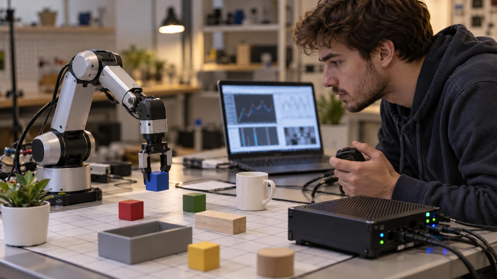

Семейство ветвится от общей базы LFM3-1.7B-Base (1,73 млрд параметров, контекст 256 тыс. токенов, словарь 128 тыс., поддержка 16 языков). LFM3-1.7B работает с текстом, LFM3-VL-2B принимает текст, картинки и видео, LFM3-Audio-2B понимает речь и отвечает голосом, а LFM3-Omni-2B — первая omni-модель компании: на вход текст, изображения, видео и звук, на выход — текст и речь. Две «решающие» модели d1-2B и d1-Omni-2B вместо генерации текста выдают откалиброванные решения — для задач, где агенту нужно выбрать действие, а не сочинять абзац. Все веса открыты под LFM Open License v1.0 и уже лежат на Hugging Face в квантованных сборках (GGUF, MLX, FP8, NVFP4).
База устроена как гибрид: 24 слоя — 13 gated-свёрток, пять слоёв скользящего внимания с окном 256 токенов и шесть глобальных. Свертки с ядром 7 (раньше было 3), поэлементные сигмоидные затворы на головах внимания (придавляют выбросы, мешающие квантованию), частичная RoPE и «сэндвич»-нормализация — всё это результат поиска архитектуры с замерами на реальном железе: от Samsung Galaxy S26 Ultra, OnePlus 15 и Raspberry Pi 5 до Apple M4 Max, AMD Ryzen AI и Qualcomm Hexagon. Предобучение — 22 трлн токенов, из них последние 3,5 трлн — этап с увеличенной долей агентских трейсов и вызовов инструментов; дальше четыре этапа посттренинга, включая агентское RL внутри настоящих агентских обвязок.
Сама Liquid AI заявляет, что LFM3-1.7B при на 35% меньшем числе параметров превосходит прежнюю LFM2.5-2.6B, а в агентском тесте WebArena-Verified набирает 38,42 против 3,02 у предшественницы. Важные оговорки: это данные самой компании, а карточка модели прямо предупреждает, что модель не рекомендована для агентского кодинга и сложных многошаговых рассуждений. В 4-битной точности текстовая модель занимает около 1 ГБ памяти — на этом и строится обещание: приватный голосовой и визуальный агент на устройстве, без облака.
Среди партнёров запуска — AMD, Arm, Intel (OpenVINO), NVIDIA, Qualcomm (AI Hub и GenieX), Ambarella, OpenRouter и Vercel; Mercedes-Benz и Shopify тестировали модели до релиза. Для нас смысл простой: локальные модели перестают быть игрушкой для энтузиастов — зрение, слух и речь за гигабайт памяти открывают дорогу агентам, которые вообще не видят чужих серверов. А значит вопрос безопасности таких рантаймов станет ещё острее.